9:41
Football

Thu1 Jan
Fri2 Jan
Sat3 Jan
Today4 Jan
Mon5 Jan
Tue6 Jan
Wed7 Jan
Thu8 Jan
You’ve reached maximum number of bets allowed.
La ludopatía es un riesgo del juegoSolo para mayores de 18 años, infórmate en www.juegoseguro.es
Odds powered by
Betslip
0
Total odds0.00
€10 may return€0.00
Interactive promotional advertisement. DAZN Bet registration required to place bets. Odds may vary. Gamble responsibly. 18+.
La ludopatía es un riesgo del juegoSolo para mayores de 18 años, infórmate en www.juegoseguro.es
Odds powered by
Real Madrid play todayLaLiga·Santiago Bernabéu
Who will win?